Speeding up Training of Model-Free Reinforcement Learning : A Comparative Evaluation for Fast and Accurate Learning
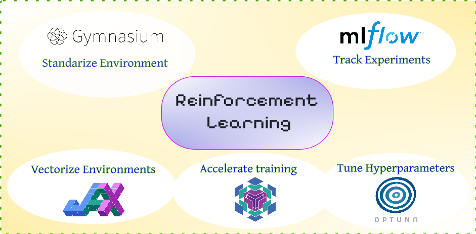
*Reinforcement Learning (RL) represents a powerful framework for solving sequential decision-making problems in dynamic environments across diverse domains, such as control of robots or optimization of profit. However, its practical implementation requires navigating a variety of software packages, encompassing deep learning libraries (e.g., TensorFlow, PyTorch, JAX/Flax), environment frameworks (e.g., Gymnasium, Numpy), and hyperparameter optimization techniques and libraries. This post critically evaluates the common PyTorch, Gymnasium, and NumPy RL stack by comparing it to a faster alternative: JAX/Flax for both of the model training and simulation of environments. A Gridworld example evaluating both training speed and accuracy is utilized to test these packages. Additionally, we complement this example by a comprehensive tracking and monitoring of the training process using MLflow along with a thorough hyperparameters optimization via Optuna. The post concludes with a discussion of the results and final recommendations for optimal use cases of each of these packages.*
Figure 1: The popular eco-system for modular and scalable training of RL agents.
Table of Content
Introduction & Installation
The typical workflow for applying Reinforcement Learning to optimize an objective involves defining Markov Decision Process (MDP) quantities, such as state and action spaces, actor model (agent), and a reward function [24]. Furthermore, an environment model is required for simulating the forward application of our RL agent in model-free algorithms. The training process alternates between collecting experience data (rollouts) and training the agent on that data. Consequently, the runtime of our program is influenced by two key components: neural network parameter updates and environment simulation. OpenAI-Gym, initially proposed in [1], and its successor Gymnasium [2] are well-established Python libraries providing a structured approach to building RL simulation environments. Popular libraries like TensorFlow and PyTorch are commonly used for training the agent model itself. This paper explores JAX [21] and its neural network extension, Flax [20], as a promising alternative for both simulation and training, aiming to accelerate training and improve optimization.
Our tests on the GridWorld environment indicate that using JAX for environment batching yields significant speedups on GPU hardware, achieving performance levels comparable to existing solutions. We also focused on the hyperparameter search problem, which is particularly critical in Reinforcement Learning due to its interactive nature. We employed the Optuna [6] implementation of advanced hyperparameter search methods, demonstrating its impact on the results. All trials and experiments were tracked using MLflow [5], providing a detailed overview of key metrics.
Beyond that, each implementation section begins with a concise overview of the package's capabilities and main functions, enabling readers to effectively utilize them in their projects. Finally, the main experimental results are presented and discussed, followed by concluding takeaways.
The installation of the packages needed in this post with pip-python can be done simply as follows:
pip install gymnasium pip install mlflow pip install optuna #replace with your cuda version pip install "jax[cuda12]" pip install flax
Gymnasium: Standardize Your Environment
Gymnasium is an updated version of the popular Gym package, originally developed by OpenAI [1]. It provides a collection of standardized simulated environments with unified interfaces, which are regularly updated. This standardization is beneficial for benchmarking different RL algorithms, as well as for improving readability and collaboration. Several other advantages motivate the use of Gym and Gymnasium:
-
Vectorized Environments (
VecEnv): This feature allows running multiple instances of the same environment concurrently, enabling batching of states and actions. This significantly speeds up trajectory rollout and, consequently, the training of the RL agent. There are two methods for deploying vectorized environments in Gymnasium: Synchronized and Asynchronous environments. A comparison of these two is presented in Table 1 below.
| `gymnasium.Vector.SyncVectorEnv` | `gymnasium.Vector.AsyncVectorEnv` |
|---|---|
| creates all environments in one thread serially and batch the output (state,reward,done flags) | each environment is created with its own subprocess (computational thread) |
| best used when environment process is simple, and faster than running independent subprocesses for each instance. | best used when the environment processes are computationally expensive and there's enough memory for subprocesses. |
| Input to both functions should be a list of creation functions of environments (e.g., using a lambda function). | |
| If you set the optional key input (`shared_memory`) to True, then the output observation data will be referenced directly without copying, which can speed up the stepping when its size is large. | |
-
Spaces Objects: These are used to define the state and action values and distributions. These spaces represent specific constraints. Examples of possible space sets are shown in Figure 2, imported from
gymnasium.spaces.
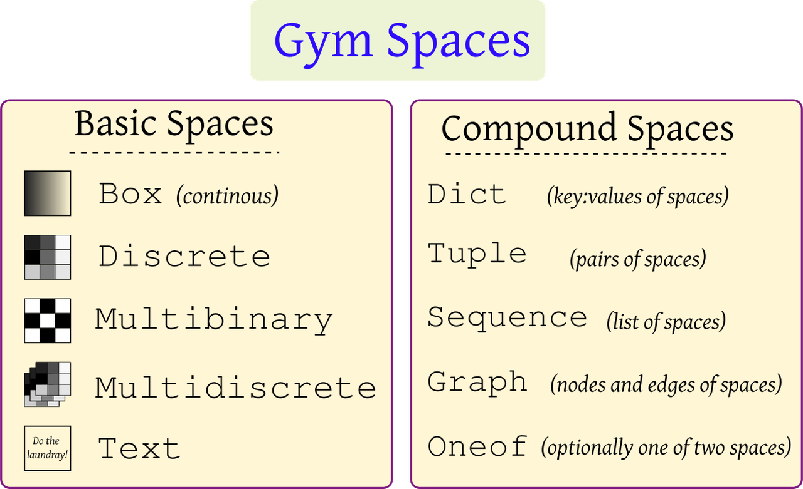
Figure 2: Gymnasium basic and compound spaces.
-
Registry: Custom environments can be registered within the installation so that they can be instanced directly like a standard Gym package (with
gym.make). -
Wrappers: The
gymnasium.wrappersmodule contains useful classes to modify specific environment behavior. Examples include:-
ObservationWrapper: Modifies the observation space. -
ActionWrapper: Modifies the action space. -
RewardWrapper: Modifies the reward function. -
TimeLimit: Used to truncate an episode after a specific number of steps. -
AutomaticReset: When the environment reaches a terminal state or is truncated, this wrapper resets it on the next call to.step(), returning the last observed state. -
RecordEpisodeStatistics: Important for collecting episodic rewards, which indicate the success or failure of a policy during training.
-
-
If your environment is a subclass of
gymnasium.Env, you benefit from automatic testing using thegymnasium.utils.env_checker.check_envfunction, which performs common tests on the Gym environment methods and their spaces.
Additionally, Gymnasium introduces the following changes over Gym:
-
Termination and Truncation: Instead of the
doneflag, Gymnasium usesterminationandtruncationflags. Termination occurs naturally when the episode's goal is achieved (e.g., the goal is reached), while truncation happens only after a specific number of steps to prevent episodes from running indefinitely. Figure 3 depicts these differences.
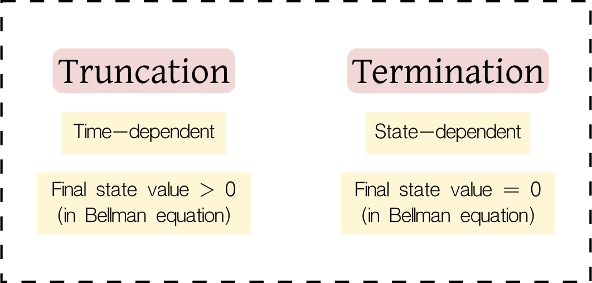
Figure 3: Difference between terminating (goal achieved) and truncating (time limit reached) a simulated episode.
-
Functional Environment Creation: A new and experimental function for environment creation,
gymnasium.experimental.functional.FuncEnv(), is introduced. This function utilizes a purely functional structure (as the environment class is stateless) to more closely reflect the formulation of POMDP (Partial Observable Markov Decision Process). Additionally, this structure facilitates direct compatibility with JAX.
Example: Creating a Custom Gym Environment and Training with DQN
This post demonstrates the application of Gym and associated libraries using a custom Gridworld environment called Doors. In this environment, an agent occupies a cell within a grid and is tasked with navigating towards a goal cell by passing through one of three gaps (doors) that divide the grid in two, as illustrated in Figure 4. The figure also depicts state-action configurations.
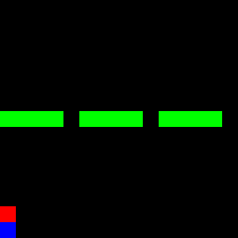
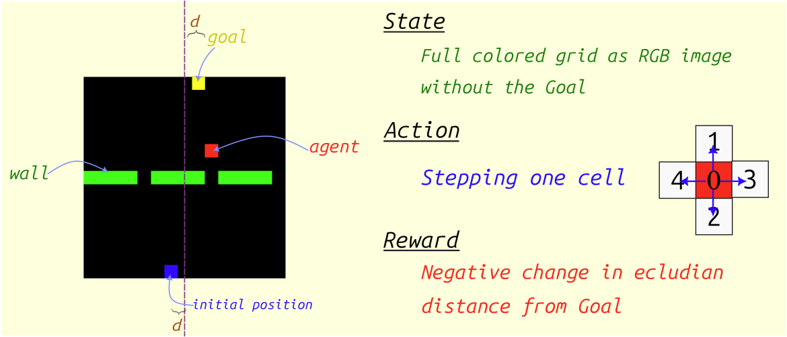
Figure 4: The *Doors* environment, introduced in [previous post](https://www.rlbyexample.net/posts/hands-on-imitation-learning/). The lower image shows an animation of the optimal policy for solving this environment.
Note: The complete code repository is available here, with the final script integrating all libraries located here.
Below, we present sections of the environment creation class in Gymnasium:
import gymnasium as gym import numpy as np from gymnasium.wrappers import Autoreset, RecordEpisodeStatistics #creating the environment class DoorsGym(gym.Env): def __init__(self,gridSize=[15,15],nDoors=3,render_frames=True): super().__init__() self.gridSize = gridSize self.nDoors = nDoors self.render_frames = render_frames self.action_space = gym.spaces.Discrete(5) # representing the four states of cells for the entire size of the grid (flattened) self.observation_space = gym.spaces.MultiDiscrete([4 for _ in range(np.prod(self.gridSize))]) def reset(self,seed=None,options=None): np.random.seed(seed=seed) super().reset(seed=seed) pass def step(self,action=None): pass
This environment can then be utilized in a separate script as shown in the following figure:
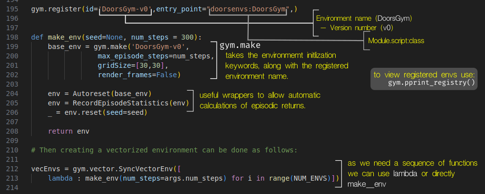
Figure 5: Environment registration and creation.
Given that the action space for this environment is discrete, we selected the Deep Q-Network (DQN) training algorithm [3], based on the CleanRL [4] implementation, to learn the policy. The subsequent sections detail how to track training metrics and plot them against training time using MLflow.
MLflow: Tracking RL Experiments
Mlflow is a popular Python library for tracking, versioning, collaborating on, and deploying
machine learning models. Its primary functionality involves displaying training metrics either on a local server (by
running mlflow ui in a new terminal, with the default port set to 5000) or on an online cloud server such as
Databricks.
Mlflow organizes training by creating an experiment for each machine learning task (for example, cat/dog image classification). Within each experiment, multiple runs can be defined, representing individual training trials for that task (e.g., different ML approaches for the same task). Furthermore, smaller runs can be nested within larger runs (which we will utilize for our hyperparameter trails, described below).
This structure enables comprehensive saving of all testing parameters and metrics, and provides a unified interface for tracking them. Additionally, Mlflow offers seamless integration with PyTorch, TensorFlow, and Keras, along with numerous other functionalities and features that are beyond the scope of this document but can be explored on its website https://mlflow.org/.
To initiate a new experiment in Mlflow, execute the following command:
mlflow.create_experiment('experiment_name'). This defines a new task for training a machine learning model or
allows continuation of an existing experiment. The code for working with an existing experiment is as follows:
import mlflow mlflow.set_tracking_uri("http://localhost:5000") mlflow.set_experiment(f"runs/{experiment_name}")
Note that you must specify the URI where the server will publish the results (in this case, http://localhost:5000)
while the local server is running in a separate terminal using the command mlflow ui.
Subsequently, you can start a specific run within the experiment or create multiple child runs nested within the
parent run by utilizing the nested keyword argument. The latter is particularly useful for hyperparameter
optimization, where each trial can be tracked independently in its own child run. The following code illustrates this
functionality.
with mlflow.start_run(run_name='main_run',nested=False) as run: # log main parameters here mlflow.log_params(MainConfigs) with mlflow.start_run(nested=True): # train here mlflow.log_params(argsDict) mlflow.log_metric('metric_name',metric_value,step=global_step) mlflow.set_tag('label') mlflow.log_figure() # matplotlib figure object mlflow.log_image() # numpy array and PIL image mlflow.pytorch.save_model(model) # saving pytorch model on the server mlflow.log_artifacts() # saving other data types # save final model model_uri = 'copy from dashboard usually starting with models:/' model_info = mlflow.pytorch.log_model(pytroch_model,model_uri) # load the model model = mlflow.pytorch.load_model(model_uri)
Then, in a new browser tab, navigate to the URL http://localhost:5000 to view all experiments. If you select an
active experiment, you can track individual runs either as a list or, as illustrated in Figure 6, as a chart
displaying all tracked metrics.
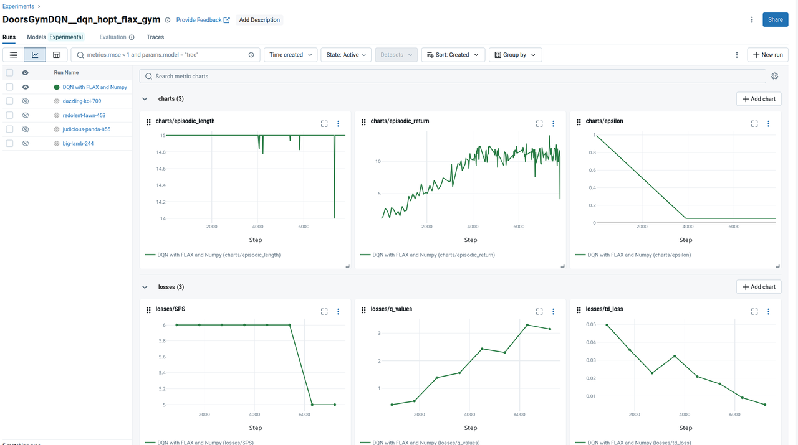
Figure 6: The MLflow interface (chart-view) displaying tracked parameters for the active run.
Optuna: Optimizing RL Hyperparameters
Reinforcement Learning (RL) training typically requires the tuning of numerous hyperparameters, exceeding the number
required for supervised learning counterparts. Therefore, applying efficient hyperparameter optimization methods such as Bayesian optimization [7] or HyperBand [16] is highly beneficial. In the following sections, we will begin by reviewing prominent hyperparameter optimization methods, focusing on their implementation using the Optuna package.
These hyperparameters in the context of RL include parameters such as the learning rate, episode length, discount factor (in the Bellman equation), as well as the agent network depth and architecture.
Types of Hyperparameter Optimization Methods:
Generally, there are four main branches of hyperparameter optimization methodologies, differing in their complexity and approach, as depicted in the following figure.
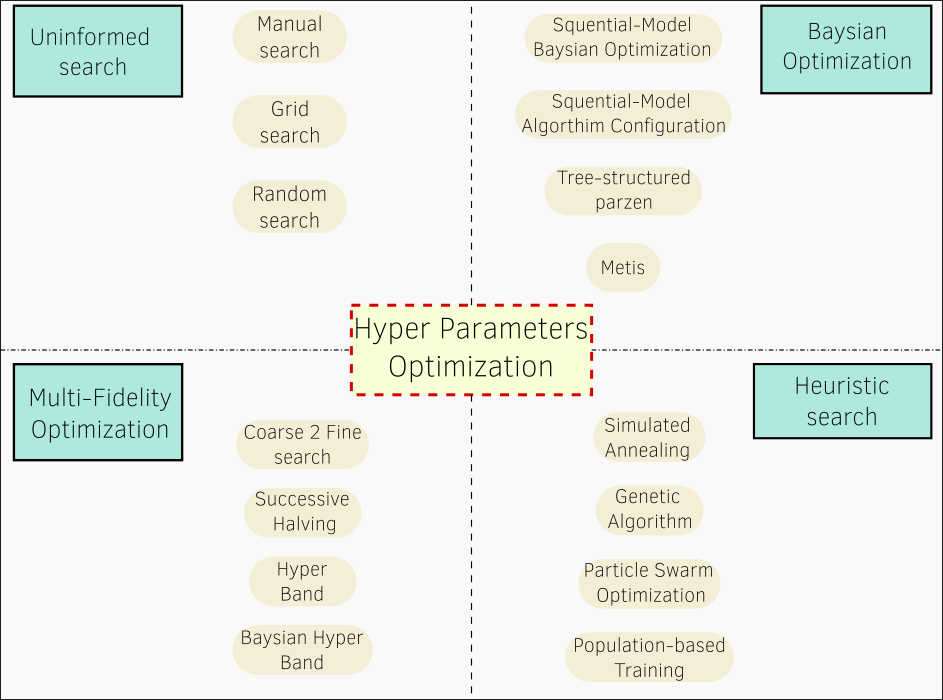
Figure 7: Main search methodologies for optimizing hyperparameters of machine learning models.
Uninformed Methods
These methods represent the simplest approach, involving the manual testing of different samples directly from the search space. Depending on their sampling strategy, they can be categorized as:
-
Manual: Samples are chosen manually by the developer.
-
Uniform: Samples are chosen uniformly distributed within the specified range.
-
Random: Samples are chosen randomly within the specified range.
Bayesian Optimization Methods
This category of methods utilizes a surrogate model to approximate the objective function – the function that estimates the learning objective (e.g., accuracy or negative loss) given the training hyperparameters. The training data for this model consists of the values from previous training attempts. The new set of hyperparameters to be tested is then proposed by another model called an acquisition function.
Based on the nature of the surrogate model, Bayesian Optimization (BO) methods [7] can be categorized as follows:
-
Sequential Model-based Algorithmic Configuration (SMAC) [8]: Employs a random forest to approximate the objective function, making it suitable for searching categorical and discrete parameters.
-
Sequential Model-based Bayesian Optimization (SMBO) [9]: Utilizes a Gaussian Process model, suitable for continuous hyperparameters.
-
Tree-structured Parzen Estimators (TPE): Employs a random forest, suitable for large search spaces encompassing both continuous and discrete parameters, with fast run-time. In
Optuna, its implementation enables the learning of interactive relationships between different hyperparameters. Its Optuna function isoptuna.samplers.TPESampler. -
MATIS [10]: Gaussian Process-based, also utilizing a Gaussian Mixture Model as its acquisition function.
Heuristic Search
This branch of methods samples the hyperparameters for the next training iteration within the neighborhood of the best set of hyperparameters found so far. The definition of this neighborhood significantly impacts search performance, leading to various variants:
-
Simulated Annealing (SA) [11]: Searches for the next sample around the best or next-to-best set of values found so far, aiming to avoid local minima.
-
Genetic Algorithm [12]: Applies evaluation-inspired methods to select the next set of values. This typically involves pairing the best samples found for different parameters or mutating them.
-
Particle Swarm Optimization [13]: This method specifically focuses on continuous hyperparameters.
-
Population-based Training [14]: This method specializes in neural network optimization, searching for both hyperparameters and standard training parameters. It gradually adds new layers to the model during training, while retaining the previously trained layers. However, it cannot recover the exact best hyperparameters for the best model, as it only finds the parameters of the final trained model.
Multi-Fidelity Optimization (MFO)
This approach enhances hyperparameter optimization by enabling faster training through early stopping on less promising samples, achieved by training on subsets of the data or for a reduced number of epochs (as in Optuna). This is more efficient than full training for all samples, as it avoids unnecessary computational resources spent on evaluating many samples with a low probability of being optimal, while focusing on areas with promising performance. MFO methods frame this concept as resource management algorithms. Notably, MFO methods can be directly combined with the aforementioned sampling methods, addressing different aspects of the optimization problem. In Optuna, MFO methods are termed Pruners, while the sampling methods are called Samplers.
Popular MFO methods include:
-
Coarse-to-Fine Pruner: As the name suggests, this method initiates training with a small number of samples and gradually focuses on a more promising subset.
-
Successive Halving (SH) [15]: This method allocates computational resources strategically across different training trails.
-
HyperBand (HB) [16]: This method defines pairs of candidate numbers and their allocated resources, called brackets, and initiates full training on a subset of these brackets. This prevents prematurely discarding promising candidates, a potential issue with SH due to shallow training. Its Optuna function is:
optuna.pruners.HyperbandPruner. -
Bayesian Optimization HyperBand (BOHB): Combining a Bayesian Optimization sampler with a HyperBand pruner often yields improved results, as detailed in [17]. In Optuna, this can be achieved by setting the sampler to TPE and the pruner to HB.
Steps for Hyperparameter Optimization in Optuna:
Hyperparameters in RL training programs are numerous and have varying effects on the training process. Therefore, manually tuning them requires significant experience and experimentation to identify optimal values. Optuna [6] provides a direct and efficient solution for saving effort in practical applications by utilizing automated search with well-established implementations. Optuna simplifies this process with clear implementation steps, supporting most of the aforementioned methods and offering direct integration with libraries like MLflow, PyTorch, and JAX. These steps can be summarized as follows:
- Define the objective function, which, in the case of RL, returns the average episodic return.
- Within this objective function, define the ranges and types of hyperparameters to be optimized using the
optuna.trail.suggest_group of functions. - Initialize the optimization object (called the study) using
create_study()and define the desiredsamplerandprunermethods, along with the direction (defaulting to minimization). - Optionally, save the current training session by passing the
storageargument (a database URL) tocreate_study(). This allows for resuming training from a saved session of trails by passingload_if_exists=Trueto the same function. - Initiate training using the
.optimize()method of the previous study object, passing the objective function as a callable and the number of trials. - Upon completion of optimization, the best set of parameters can be accessed via
study.best_params, and the trained model can be saved.
It is also worth noting that Optuna includes a visualization module (optuna.visualization) whose functions take the optimized study object as input and generate various useful plots, such as those illustrating the most influential hyperparameters on the results. This module requires the installation of the plotly package.
In the following we show some illustrative code snippet to implement the above steps.
Training Code Structure in Optuna
import optuna from optuna.samplers import TPESampler from optuna.pruners import HyperbandPruner from functional import partial def objective(trail,argsParams={}): argsParams.update({"num_steps":trial.suggest_int("num_steps", 10, 17, step=1)}) argsParams.update({"learning_rate":trial.suggest_float("learning_rate", 1e-4, 1e-1, log=True)}) # log argument makes it more probable to sample lower values. argsParams.update({"buffer_size":trial.suggest_int("buffer_size",16 , 48, step=1, log=True)}) argsParams.update({"batch_size":trial.suggest_int("batch_size", 16, 128, step=16)}) argsParams.update({"train_frequency":trial.suggest_int("train_frequency", 2, 24, step=1, log=True)}) argsParams.update({"optimizer_name": trial.suggest_categorical("optimizer_name", ["Adam", "SGD"])}) # define network # define optimizers # training loop with mlflow.start_run(nested=True) as run: mlflow.log_params(argsParams) # training logic for epoch in range(NumberOfEpochs): # training logic # send the final metrics mlflow.log_metrics({"charts/episodic_return": infos["episode"]["r"][finished].mean(), "charts/episodic_length": infos["episode"]["l"][finished].mean(), "charts/epsilon": f"{epsilon:2f}"}, step=global_step) # break training whenever sample seems not optimal (early stopping) if trial.should_prune(): raise optuna.TrialPruned() # return average episodic reward (objective) with mlflow.start_run(run_name=run_name) as run: study = optuna.create_study(sampler=TPESampler(seed=seed, multivariate=False), # if multivariate is true the sampler can learn the mutual interactions of variables pruner=HyperbandPruner(min_resource=240, max_resource=max_epochs, reduction_factor=3), #resource represents epochs direction="maximize") # objective function should be passed as callable without arguments to optimize method objective_func = partial( objective, argsParams=vars(argsParams).copy(), device=device ) study.optimize(objective_func, n_trials=12) # hom many trails to test print(study.best_parameters) # the results mlflow.log_params(study.best_params) # log it with mlflow # visualizations require plotly installed plotly_fig = optuna.visualization.plot_param_importances(study,evaluator=None) plotly_fig.show() # evaluator is optuna.importance.FanovaImportanceEvaluator by default or optuna.importance.MeanDecreaseImpurityImportanceEvaluator plotly_fig = optuna.visualization.plot_contour(study) plotly_fig.show() plotly_fig = optuna.visualization.plot_optimization_history(study) plotly_fig.show() # these images can be viewed in new widows or sent to MLflow server to view them alongside other parameters mlflow.log_figure(plotly_fig,artifact_file=f"opt_history.html")
In our accompanying code repository, we conducted 40 trials to search for optimal hyperparameters, and visualized the results using the following methods:
-
Parameter Importance: We used
optuna.visualization.plot_param_importancesto assess the relative importance of each hyperparameter on model training performance. The two most influential parameters were found to be episode length and learning rate.
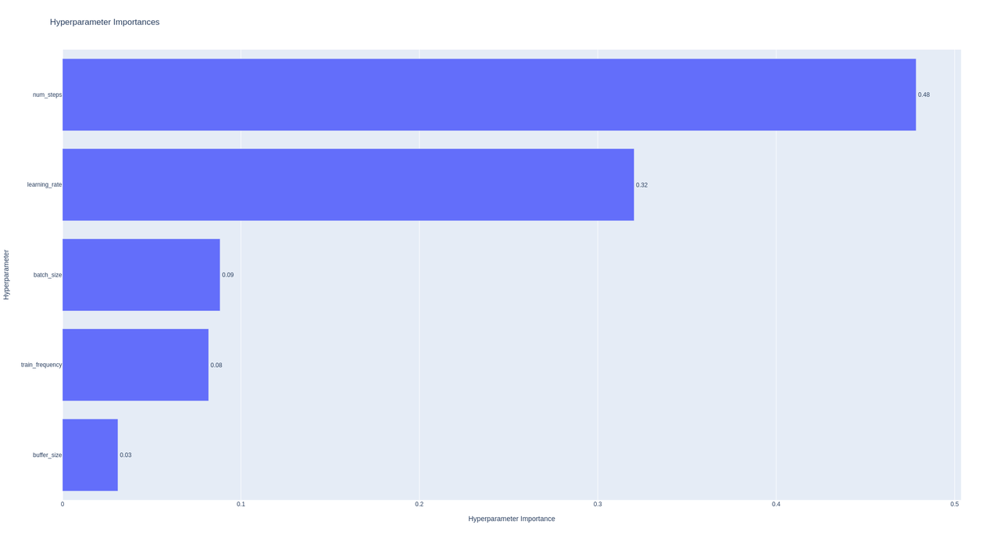
Figure 8: Hyperparameters' estimated relative importance on model training performance. The episode length and learning rate is found to be the most influential parameters.
-
Interactive Pairwise Importance: We generated 2D heatmaps using
optuna.visualization.plot_contourto visualize the interactive importance of parameter pairs. Darker regions indicate optimal combinations of these parameters.
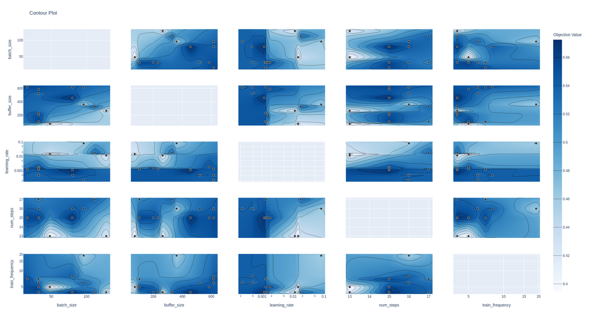
Figure 9: 2D heatmaps illustrating the interactive importance of parameter pairs on model performance. The darker regions highlight the most effective parameter combinations.
-
Optimization History: We plotted the performance of trails over time using
optuna.visualization.plot_optimization_historyto track the progress of the optimization process.
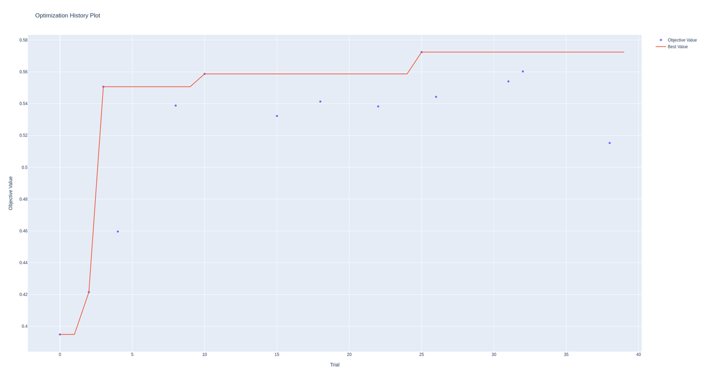
Figure 10: Improvement in trail performance over the course of training. The results demonstrate that the hyperparameter optimization process progressively identified better parameter sets, leading to improved performance. Further search is expected to continue this upward trend.
Finally, these visualizations provide valuable insights into the effective ranges and combinations of hyperparameters that yield optimal performance. This information can potentially guide manual enhancements to other configuration components and deepen the understanding of their effects in the optimization process.
JAX & Flax: Accelerating Environment Rollout and Model Training
A common approach to training reinforcement learning (RL) agents using simulated environments involves utilizing PyTorch or TensorFlow for agent training and NumPy/Gym for environment simulation. However, Google's JAX (Just After Execution) presents an increasingly popular alternative. JAX offers a faster method for performing matrix computations efficiently (replacing NumPy) and training neural network models (replacing PyTorch) by leveraging hardware acceleration on devices like GPUs and TPUs. While JAX can be directly used to update neural network parameters, a targeted JAX-based package like Flax simplifies model structuring and algorithm development.
In the following sections, we will highlight key features of JAX, focusing on its NumPy-compatible functionalities. We will demonstrate these features later by rewriting the Doors Gym environment in JAX and comparing its runtime performance with the original implementation.
-
JAX employs the XLA (Accelerated Linear Algebra) compiler to translate code into a statically typed expression language called Jexpr. This compiled code executes faster on CPUs, GPUs, and TPUs. Specifically, JAX functions can be compiled by passing them to the
jax.jit()function or by using the@jax.jitdecorator directly above their definitions. -
JAX largely replaces NumPy functions with similarly named counterparts, minimizing code modification efforts.
Typically, replacingimport jax.numpy as npwithimport numpy as npis sufficient. However, certain considerations are important, as detailed below:
Note: Unlike NumPy, JAX arrays are immutable. Consequently, in-place modification is not possible. Instead, array elements must be updated using operations like:
import jax arr = jax.numpy.arange(10) arr = arr.at[1].add(2) # equivalent to arr[1] += 2 in NumPy
Note: JAX arrays do not raise an
OutofIndexerror when accessing elements outside their bounds; instead, they default to returning the last element in the array.Note: JAX defaults to
float32precision, unlike NumPy'sfloat64.Note: JAX provides alternative implementations of SciPy functions through the
jax.scipymodule.
The following code shows an example of a JAX compatible function compiled with jit, measuring its runtime
import jax import time arr = jax.numpy.arange(35).reshape(7,5) # 7x5 array print(f'JAX running on : {arr.device}') @jax.jit def ATA(x): return x.dot(x.T) # run in IPython : %timeit -n 100 ATA(arr).block_until_ready()
-
JAX's
jax.vmap()function (or the@jax.vmapdecorator) enables automatic vectorization of functions, facilitating parallel processing of multiple inputs. Instead of iterating through each input individually, you can pass them as a batch to achieve significant speed improvements over standard Python and NumPy code. The input and output are effectively stacked and concatenated, adding a new dimension to their matrices (the placement of this dimension is configurable). We demonstrate that this approach is also faster than the Gymnasium environment vectorization methods. -
JAX also supports vectorization across computational resources, enabling parallel processing. This functionality is implemented similarly to
vmap, using eitherjax.pmap()or the@jax.pmapdecorator.
Note: JAX execution is, by default, asynchronous. This means that code returns immediately before calculating the output of a function. To ensure the function completes before returning, use
.block_until_ready()to append the function call.
-
Beyond compilation with XLA, JAX effectively calculates gradients through automatic differentiation (autodiff) of all variable calculations. This is particularly beneficial for accelerating the training of neural networks.
-
Control statements (for, while, if, switch) are known performance bottlenecks in Python. In JAX, these can be replaced with functional equivalents as follows:
from jax import lax lax.cond # if lax.switch # switch, case lax.while_loop # while lax.fori_loop # for # example for fori_loop @jax.jit def main(): def for_loop_body(i,accumulator): accumulator += accumulator return accumulator accumulator = 10 init_val = accumulator start_i = 0 end_i = 100 final_value = lax.fori_loop(start_i, end_i, for_loop_body, init_val)
Note: For code to be compiled or vectorized correctly in JAX, it must be exclusively functional. Object-oriented code (such as classes with stateful attributes) cannot be compiled. However, stateless class objects can be used, provided they do not retain internal variables (or use them solely as static variables). If these variables are modified, they are inherently part of the state.
Note: This functional code restriction should not be viewed as a limitation. In fact, functional code is commonly considered more readable and better structured.
- The following code snippet presents an example of our Doors environment converted to a stateless class, while remaining compatible with Gymnasium. Specific new functions are explained in the comments.
import gymnasium as gym import cv2 from functools import partial import jax from jax import jit,random import jax.numpy as np from jax import lax,vmap, pmap class DoorsEnvJax(gym.Env): def __init__(self,gridSize=[15,15],nDoors=3): super().__init__() # Static variables - not to be changed: otherwise an error is thrown. EnvConfig = {} self.gridSize = gridSize self.nDoors = nDoors self.action_space = gym.spaces.Discrete(5) self.observation_space = gym.spaces.MultiDiscrete([4 for _ in range(self.gridSize[0]*self.gridSize[1])]) self.actions_vocal = np.array([[0,0],[0,1],[1,0],[0,-1],[-1,0]]).astype(int) @partial(jit,static_argnums=(0,)) # ignore the first (self) input @partial(vmap,in_axes=(None,0,0,0)) # vectorize along the first dimension (order 0) of all inputs except the first (None) def step(self, action, env_state, info): key = env_state[1] state = env_state[0] agent_location = info['agent_location'] goal_location = info['goal_location'] episodic_reward = info['episode']['r'] timestep = info['episode']['l'] max_steps = info["num_steps"] movement = self.actions_vocal[action] new_location = np.clip(agent_location+movement,0,np.array(self.gridSize)-1) terminated = False truncated = np.array(max_steps<=timestep,dtype=np.bool_) past_position = agent_location.copy() # check if wall (2) cell_state = state.at[*tuple(new_location)].get() # array elements are returned by .get() possible_moves = np.logical_or(cell_state == 0, cell_state == 3) # conditions should be performed by jax functions # boolean indexing can be done utilizing jax.np.where state = np.where(possible_moves, # boolean mask array state.at[tuple(agent_location)].set(0).at[tuple(new_location)].set(1), # value if True state # value if False ) agent_location = new_location.copy() terminated = (cell_state == 3) reward = self._get_reward(past_position,agent_location,goal_location) info.update(self._get_info(agent_location,goal_location)) # automatic reset new_state = np.where(np.logical_or(terminated,truncated), self.reset(key[None,:])[0][0][0,...], # to remove vector dimension (state).copy()) info.update({"new_state":new_state, "episode":{'r':episodic_reward+reward,'l':timestep+1}, "agent_location":np.hstack(np.where(new_state==1,size=1)), "goal_location":np.hstack(np.where(new_state==3,size=1))}) # Random keys should be used only once. Therefore we generate a new one each step. new_key = random.split(key)[0,:] return (new_state,new_key), reward, terminated, truncated, info
As illustrated in the preceding example, the environment class is inherently vectorized, enabling the parallel
execution of multiple environments by passing matrices of actions stacked along the first dimension. This is
initialized within the .reset() function by generating a corresponding set of random keys. Specifically:
key = random.PRNGKey(0) NUM_ENVS = 24 # vmap keys = random.split(key,NUM_ENVS) # generate new keys from existing ones.
This vectorization has proven to be significantly advantageous in our experiments. To confirm this, we evaluated the runtime performance for a range of DOORS environment counts, employing JAX, Gym Synchronized, Gym Asynchronous, and JAX with accelerated looping between steps (a common performance bottleneck in Python). The runtime results for these methods are presented in Figure 11 below.
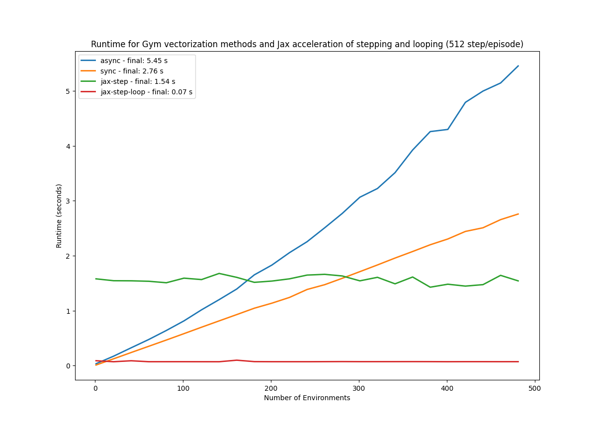
Figure 11: Comparing runtime of different vectorization methods. JAX demonstrates resilience to increasing environment counts, maintaining performance up to 500 environments. Accelerating the for loop resulted in exceptionally fast performance, achieving a runtime of only 0.07 seconds.
JAX-based environments exhibit no runtime degradation with increasing environment instances. This
observation is particularly noteworthy, as it allows for scaling up environment counts and accelerating the rollout
phase in various reinforcement learning algorithms. The complete results and plotting script are available in the
display.py script within the accompanying repository, facilitating reproducibility and allowing researchers to test the implementation on their own hardware. Furthermore, the Synchronized execution method consistently outperformed the Asynchronous version, likely due to the relatively simple environment stepping operations in DOORS, which minimize the overhead associated with spawning numerous subprocesses.
FLAX
FLAX [20] is a specialized library built upon JAX for constructing and training neural networks. It is often favored over PyTorch or TensorFlow for deep learning due to JAX's inherent speed and improved readability.
In addition to FLAX, we leverage another JAX-based library, optax [21], to facilitate composable gradient
transformations within JAX while defining the model and training state in FLAX.
FLAX's neural network classes inherit from flax.linen.Module. The forward pass of a network is defined within its __call__() function, annotated with @flax.linen.compact. This design results in an object-oriented network
creation interface that remains stateless and compatible with Just-In-Time (JIT) compilation.
The following code illustrates the definition of a neural network in Flax and its application to a random input, a
necessary step for initializing its parameters. It's important to note that these parameters are required inputs for model inference via the .apply() method, as the class is stateless.
from jax import random from flax import linen as nn class MLP(nn.Module): @nn.compact def __call__(self,x): x = nn.Dense(features=512)(x) x = nn.activation.swich(x) x = nn.Dense(features=10)(x) return x model = MLP() main_key = random.PRNGKey(0) key1, key2 = random.split(main_key) random_data = random.normal(key1,(28,28,1)) params = model.init(key2, random_data) out = model.apply(params, random_data) print(model.tabulate(key2,random_data)) # shows the model structure
A key advantage of FLAX is its automatic vectorization of network functions, eliminating the need for explicit
jax.vmap calls. The batch dimension defaults to the first dimension, simplifying parallelization.
Following the definition of the network, we define the optimizer using optax and the training state class to manage the training process, as shown below:
from flax import train_state import optax state = train_state.TrainState.create( apply_fn=model.apply, params=params, tx=optax.sgd(learning_rate=1.0,momentum=0.9) ) @jax.jit def update(train_state,x,y): def loss(params, inputData, target): logits = train_state.apply_fn(params, inputData) log_preds = logits - jax.np.logsumexp(logits) return -jnp.mean(target*log_preds) loss, grads = jax.value_and_grad(loss)(train_state.params,x,y) train_state = train_state.apply_gradients(grads=grads) return train_state, loss_value
Using the preceding code, we can update the model's parameters based on the calculated loss. To persist the trained Flax model, we utilize the following code:
with open(model_path, "wb") as f: f.write(flax.serialization.to_bytes(model.params)) # This code saves the model parameters in a data object. To load the parameters again, use: with open(model_path, "r") as f: q_state.params = flax.serialization.from_bytes(q_state.params, f.read())
Note: The
orbaxlibrary provides a higher-level abstraction for automatically saving Flax models.
Final Take-away
Table 2 presents the performance (measured as the final step-wise mean reward over the last 2000 episodes – returned during the total of 5e5 training episodes) and training runtime for three variations of the training program:
- PyTorch with Gym (synchronized environments) available here
- Flax with Gym (synchronized environments) available here
- Flax with Gym and JAX automatic vectorization on GPU available here
- PyTorch with Gym and JAX automatic vectorization on GPU available here
Note: These results were obtained using an NVIDIA GeForce RTX 5060 Ti GPU and an AMD Ryzen 5 7600X 6-Core Processor for the CPU. Each of the first and last tests was run with 40 trials, while the hyperparameters for the other tests were derived from the best-performing configuration of the final trial.
Table 2: Performance and Runtime of Training a DQN Agent to solve the DOORS Environment utilizing three different combinations of packages (JAX, Flax, and PyTorch)
| Pytorch for DQN | FLAX for DQN | FLAX-DQN and JAX for Env | |
|---|---|---|---|
| Rolling Reward | 0.73 | 0.64 | 0.71 |
| Training Time | 22.5 min | 22.8 min | 2.3 min |
| Training Cruves | 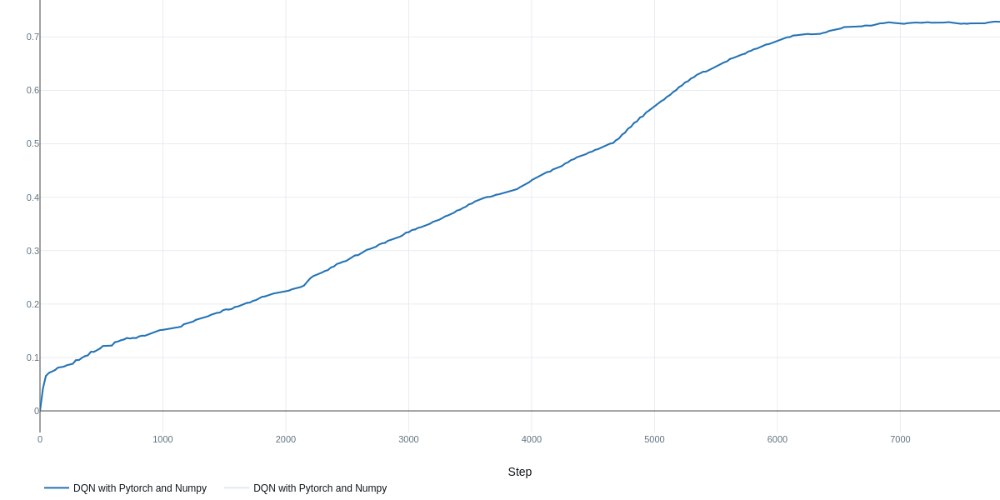 |
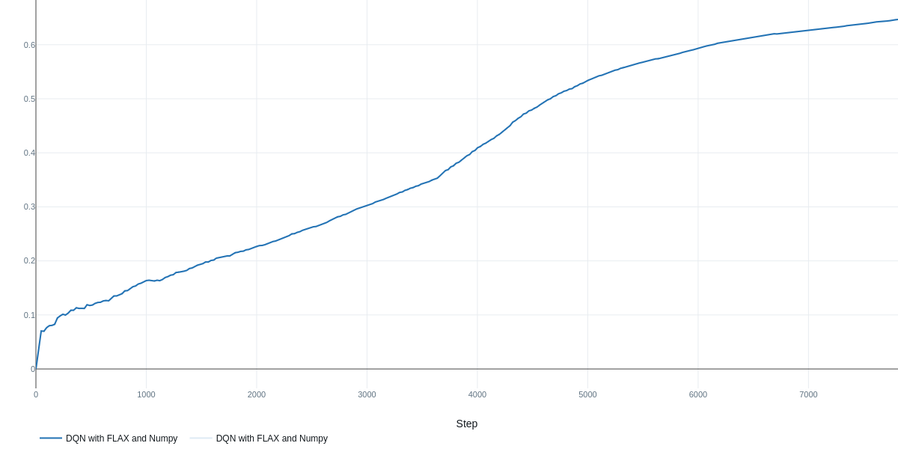 |
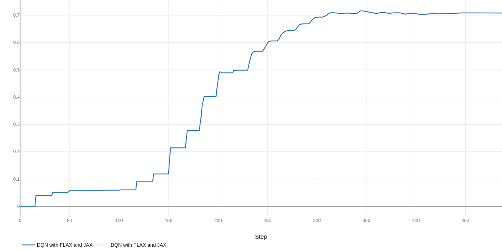 |
The results in Table 2 indicate that hyperparameter optimization was crucial for achieving strong performance with PyTorch, yielding a final reward of 0.73 after 40 trials. The other implementations utilizing JAX and Flax achieved comparable but slightly lower results, potentially due to the inherent randomness associated with initializations in these frameworks. Increasing the number of search trials may yield further improvements across all methods. It is also important to note that in off-policy methods like DQN, a larger buffer size is beneficial for maximizing the speedup gained from saved experiences; otherwise, performance cannot benefit from the fast environment rollout.
The most significant performance gain was observed in training time, attributable to the replacement of standard NumPy operations within the DOORS environment with JAX-accelerated, vectorized functional code. This is made possible by increasing the number of environments knowing that the speed of JAX's functional stateless classes is not affected by that increase. Consequently, we leveraged this characteristic by increasing the number of environments by a factor of 16 in the JAX-based implementation, resulting in a substantial speedup on our hardware of approximately 10 times. We anticipate further speedup potential with even bigger number of environments. The remaining settings and hyperparameter ranges were the same across all three tested setups.
With these findings, we conclude by offering recommendations on when and why to utilize each of the discussed packages:
-
Gymnasium: If the goal is to create novel environments and facilitate sharing and collaboration with the broader research community, Gymnasium is a suitable choice.
-
MLflow: For comprehensive tracking of training metrics and parameters, complete visualization of hyperparameters, and streamlined deployment, MLflow provides a direct and effective solution.
-
Optuna: When dealing with complex models possessing numerous hyperparameters that are difficult to tune manually (a common scenario in Reinforcement Learning), Optuna offers implementations of advanced hyperparameter search algorithms with seamless integration with MLflow.
-
JAX: If environment simulation is computationally expensive and represents a bottleneck in training runtime, vectorizing the environment using JAX on GPU or TPU devices can yield significant speedups, enabling faster sampling of larger batches.
-
Flax: As a JAX-based library, Flax benefits from accelerated gradient calculations, potentially leading to performance gains on specialized hardware. However, this benefit may be diminished for smaller models and datasets, as observed in our results where PyTorch performance was comparable. Flax is particularly advantageous when dealing with large observation spaces, such as those containing images or videos with numerous trainable parameters.
Therefore, a thorough examination of the training pipeline is recommended to identify the computational bottleneck, especially in model-free Reinforcement Learning, which involves rollout generation and model parameter updates phases. For the former, we suggest leveraging accelerated JAX matrix operations, and for the latter, we recommend Flax's autodiff and optimizer capabilities.
Additional Libraries Leveraging JAX
To avoid reinventing the wheel when wanting to switch to JAX implementation, it is useful to explore open-source clean JAX projects for Reinforcement Learning or Environment Simulation, that can be imported and modified as needed.
Brax
Brax [22], a JAX-based reimplementation of MuJoCo developed by Google, demonstrates significant speedups over standard MuJoCo and includes implementations of SAC and PPO RL algorithms. (For an introduction to MuJoCo, see our post here).
Dopamine
Dopamine [23], another Google-developed package, provides a JAX implementation of a variety of RL algorithms for researchers, facilitating rapid training and testing across diverse environments.
References
- Brockman, G., Cheung, V., Pettersson, L., Schneider, J., Schulman, J., Tang, J., & Zaremba, W. (2016). Openai gym. arXiv preprint arXiv:1606.01540.
- Towers, M., Kwiatkowski, A., Terry, J., Balis, J. U., De Cola, G., Deleu, T., ... & Younis, O. G. (2024). Gymnasium: A standard interface for reinforcement learning environments. arXiv preprint arXiv:2407.17032.
- Mnih, V., Kavukcuoglu, K., Silver, D., Graves, A., Antonoglou, I., Wierstra, D., & Riedmiller, M. (2013). Playing atari with deep reinforcement learning. arXiv preprint arXiv:1312.5602.
- Huang, S., Dossa, R. F. J., Ye, C., Braga, J., Chakraborty, D., Mehta, K., & AraÚjo, J. G. (2022). Cleanrl: High-quality single-file implementations of deep reinforcement learning algorithms. Journal of Machine Learning Research, 23(274), 1-18.
- Zaharia, M., Chen, A., Davidson, A., Ghodsi, A., Hong, S. A., Konwinski, A., ... & Zumar, C. (2018). Accelerating the machine learning lifecycle with MLflow. IEEE Data Eng. Bull., 41(4), 39-45.
- Akiba, T., Sano, S., Yanase, T., Ohta, T., & Koyama, M. (2019, July). Optuna: A next-generation hyperparameter optimization framework. In Proceedings of the 25th ACM SIGKDD international conference on knowledge discovery & data mining (pp. 2623-2631). SMBO
- Frazier, P. I. (2018). A tutorial on Bayesian optimization. arXiv preprint arXiv:1807.02811. TPE
- Bergstra, J., Bardenet, R., Bengio, Y., & Kégl, B. (2011). Algorithms for hyper-parameter optimization. Advances in neural information processing systems, 24. SMAC
- Hutter, F., Hoos, H. H., & Leyton-Brown, K. (2011, January). Sequential model-based optimization for general algorithm configuration. In International conference on learning and intelligent optimization (pp. 507-523). Berlin, Heidelberg: Springer Berlin Heidelberg. METIS
- Li, Z. L., Liang, C. J. M., He, W., Zhu, L., Dai, W., Jiang, J., & Sun, G. (2018). Metis: Robustly tuning tail latencies of cloud systems. In 2018 USENIX Annual Technical Conference (USENIX ATC 18) (pp. 981-992). SA
- Kirkpatrick, S., Gelatt Jr, C. D., & Vecchi, M. P. (1983). Optimization by simulated annealing. science, 220(4598), 671-680. GA
- Di Francescomarino, C., Dumas, M., Federici, M., Ghidini, C., Maggi, F. M., Rizzi, W., & Simonetto, L. (2018). Genetic algorithms for hyperparameter optimization in predictive business process monitoring. Information Systems, 74, 67-83. swarm
- Kennedy, J., & Eberhart, R. (1995, November). Particle swarm optimization. In Proceedings of ICNN'95-international conference on neural networks (Vol. 4, pp. 1942-1948). ieee. population
- Jaderberg, M., Dalibard, V., Osindero, S., Czarnecki, W. M., Donahue, J., Razavi, A., ... & Kavukcuoglu, K. (2017). Population based training of neural networks. arXiv preprint arXiv:1711.09846. SH
- Pietruszka, M., Borchmann, Ł., & Graliński, F. (2021, May). Successive halving top-k operator. In Proceedings of the AAAI Conference on Artificial Intelligence (Vol. 35, No. 18, pp. 15869-15870). HB
- Li, L., Jamieson, K., DeSalvo, G., Rostamizadeh, A., & Talwalkar, A. (2018). Hyperband: A novel bandit-based approach to hyperparameter optimization. Journal of Machine Learning Research, 18(185), 1-52. BOHB
- Falkner, S., Klein, A., & Hutter, F. (2018, July). BOHB: Robust and efficient hyperparameter optimization at scale. In International conference on machine learning (pp. 1437-1446). PMLR.
- Imambi, S., Prakash, K. B., & Kanagachidambaresan, G. R. (2021). PyTorch. In Programming with TensorFlow: solution for edge computing applications (pp. 87-104). Cham: Springer International Publishing.
- Bradbury, J., Frostig, R., Hawkins, P., Johnson, M. J., Leary, C., Maclaurin, D., ... & Zhang, Q. (2021). JAX: Autograd and xla. Astrophysics Source Code Library, ascl-2111.
- Heek, J., Levskaya, A., Oliver, A., Ritter, M., Rondepierre, B., Steiner, A., & Van Zee, M. (2020). Flax: A neural network library and ecosystem for JAX. Version 0.3, 3, 14-26.
- DeepMind and Babuschkin, Igor and Baumli, Kate and Bell, Alison and Bhupatiraju, Surya and Bruce, Jake and Buchlovsky, Peter and Budden, David and Cai, Trevor and Clark, Aidan and Danihelka, Ivo and Dedieu, Antoine and Fantacci, Claudio and Godwin, Jonathan and Jones, Chris and Hemsley, Ross and Hennigan, Tom and Hessel, Matteo and Hou, Shaobo and Kapturowski, Steven and Keck, Thomas and Kemaev, Iurii and King, Michael and Kunesch, Markus and Martens, Lena and Merzic, Hamza and Mikulik, Vladimir and Norman, Tamara and Papamakarios, George and Quan, John and Ring, Roman and Ruiz, Francisco and Sanchez, Alvaro and Sartran, Laurent and Schneider, Rosalia and Sezener, Eren and Spencer, Stephen and Srinivasan, Srivatsan and Stanojevi\'{c}, Milo\v{s} and Stokowiec, Wojciech and Wang, Luyu and Zhou, Guangyao and Viola, Fabio (2020). The DeepMind JAX Ecosystem https://github.com/google-deepmind
- Freeman, C. D., Frey, E., Raichuk, A., Girgin, S., Mordatch, I., & Bachem, O. (2021). Brax--a differentiable physics engine for large scale rigid body simulation. arXiv preprint arXiv:2106.13281.
- Castro, P. S., Moitra, S., Gelada, C., Kumar, S., & Bellemare, M. G. (2018). Dopamine: A research framework for deep reinforcement learning. arXiv preprint arXiv:1812.06110.
- Sutton, R. S., & Barto, A. G. (1998). Reinforcement learning: An introduction (Vol. 1, No. 1, pp. 9-11). Cambridge: MIT press.